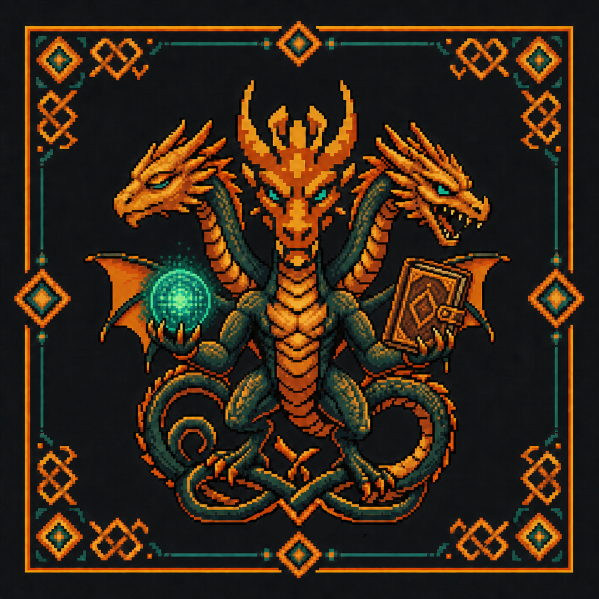

Your personal wise companion that grows with you.
A wise companion that lives on your own box. It remembers the facts of your life in durable Markdown memory, learns skills that act on them, and keeps everything in open files you own. Each new skill is a new eye — it grows with you.

Most personal AI is rented memory in someone else's cloud. Nazar is the opposite: a wise companion whose source of truth is a vault you own.
It runs host-native on the box — a local model served by llamafile (LFM2.5 by default), a branded Pi terminal, durable Markdown memory, and life-tracking for journal, diet, and sport. No containers, no cloud.
Knowledge splits cleanly onto two rails. Facts are private Markdown pages under vault/memory/, indexed by a disposable SQLite FTS5 accelerator and auto-recalled each turn by relevance (keystone: whenToUse). Procedures are Pi-native skills under skills/ — Pi itself discovers, injects, and invokes them with /skill:name.
It's named for the nazar — the watchful blue eye of old fairy tales. Yours is a wise companion that keeps the record of your life, and opens a new eye for every skill it learns.
The record of your life — what you ate, where you walked, what you felt, who you love — should answer to you alone.
Journal, diet, sport, and durable facts live as plain Markdown in a vault you can read, grep, back up, and move.
The terminal defaults to the local model. Personal context stays on the box unless you deliberately switch in the terminal.
Memory is plain Markdown under vault/memory/, indexed by a disposable FTS5 accelerator over title, body, tags, and whenToUse.
Pinned pages are always present; the most relevant facts are auto-recalled into each local prompt before the model answers.
Approved procedures become Pi-native skills under skills/ — discovered, injected, and invocable with /skill:name.
No separate gateway service: one live Pi session, one model indicator, and future channels as extensions.
Nazar is shaped by a few hard-won principles: local-first by default, files over platforms, and growth by explicit approval. Pareto, KISS, YAGNI, made operational.
Facts and procedures are plain Markdown in a repo and a vault you own — versioned in git, never an opaque memory service.
Facts ride Nazar's FTS5 memory; procedures ride Pi's own skill system. Each on the simplest rail that fits — no custom index to maintain.
whenToUse retrievalA natural-language “use this when…” hint makes organic pages findable without forcing a rigid body schema.
Core pages can be pinned into every turn; the rest surface only when relevant, keeping context small and intentional.
The agent proposes new skills or consolidations. The human approves. Git records the change. No silent self-modification.
A storybook, hand-built look in tactile pixel-art. Craftsmanship you can see is craftsmanship you can trust.
“When Nazar learns a procedure, Nazar opens another eye — one more watcher for one more domain of your life.”
Nazar ships as a Pi package: install it and its extensions, native skills, and theme load themselves. Memory tools — memory_write, memory_search, memory_get, memory_duplicates — work over the FTS5 vault and inject relevant notes before the local model answers, while skill_write grows a new Pi-native head. The whole thing edits, tests, commits, and reloads itself behind your approval.
No frameworks for their own sake. Each piece does one thing, speaks a simple boundary, and can be swapped out.
whenToUse recall
git-native growthRestic + Syncthing backupSignal / WhatsApp / web next
Run the one-line installer on your Linux box. It installs Bun, clones the repo, seeds Pi config, and wires the local model. No discrete GPU required.
Set your terminal name/avatar, vault path, and optional local model overrides in .env. No container stack.
Use the pi terminal with the Nazar package loaded; relevant memory is recalled automatically on local/private model turns.
Built in the open, in phases — each piece pulled in only when it earns its keep.
Terminal-first host-native setup, local llamafile model, Markdown vault, life-tracking, and a self-maintenance loop.
Nazar installs as a Pi package; facts-only FTS5 memory; Pi-native skills under skills/; no separate gateway service.
Use the suggest→approve loop in real workflows: add skills, refine them, and consolidate duplicate memory as the vault grows.
Signal, web, or HTTP bridges as Pi extensions attached to one long-lived terminal/tmux session.
Calendar, contacts, files, and photos through open standards (CalDAV / CardDAV / Immich) — pulled in only when they earn their keep.
Nazar is built in the open, in Brașov. Star it, self-host it, or help shape the next head — memory and skills in plain files, approved by the human who owns the vault.